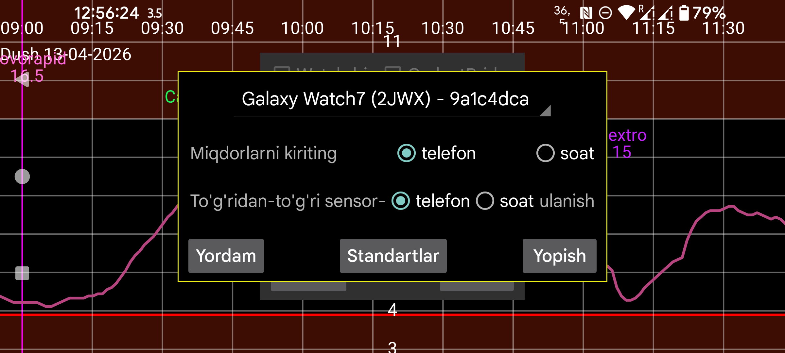

ar be de es fr hi it nl pl pt ru tr uk uz zh en
Soatda miqdor kiritish yoqilgan bo‘lsa, insulin, uglevod va faollik uchun miqdorlarni telefonda emas, soatdagi ikkinchi menyu→Miqdorlar orqali kiritasiz. Agar NovoPen’ni telefon bilan skan qilmoqchi bo‘lsangiz, bu parametrni yoqmaslik kerak. Telefon yoningizda bo‘lmasa, soatda chap menyu→Sensor→Almashtirish orqali ham shu ishni qilishingiz mumkin.
Bu parametr soat sensor bilan to‘g‘ridan-to‘g‘ri ulanadimi-yo‘qmi, shuni belgilaydi. Uni faqat telefon va soat sinxron holatda bo‘lganda o‘zgartirish mumkin. Buning uchun telefon va soatda Mirror→Sinx va Qayta dan foydalaning. Agar uydan faqat soat bilan chiqib ketishdan oldin bu parametrni yoqishni unutgan bo‘lsangiz, soatda chap menyu→Sensor→Almashtirish ni bosib sensorni to‘g‘ridan-to‘g‘ri soatga ulang. Telefon va soat yana Bluetooth diapazoniga qaytganda, telefon sensorga ulanmasligi va mirror yo‘nalishi teskari o‘girilishi haqida xabar yuboriladi.
Endi bu tugmani bosish shart emas. U avtomatik bajariladi.
Bu ulanish sozlamalarini standart holatga qaytaradi. Gap soatdagi chap menyu→Mirror va telefondagi chap o‘rta menyu→Mirror bo‘limlarida o‘zgartiriladigan parametrlar haqida ketmoqda, masalan Faqat faol yoki Skanlar. Agar parametrlar dushdagi suv tegishi yoki uyqu paytida tasodifan o‘zgarib ketgan bo‘lsa, shu tugmadan foydalanish mumkin. Agar soat versiyasini qayta o‘rnatgan yoki ma’lumotni tozalagan bo‘lsangiz, telefon tarafidagi mirror ulanishini ham olib tashlash kerak.
Juggluco’ning maxsus versiyasi Wear OS soatda to‘g‘ridan-to‘g‘ri ishlay oladi. Sensorni skan qilish uchun NFC’li Android telefon kerak bo‘ladi; keyin ma’lumot TCP orqali Wear OS soatga yuboriladi. Shundan keyin ikkita yo‘l bor:
Rasmlar: https://www.juggluco.nl/JugglucoWearOS
Hammasi to‘g‘ri bo‘lsa, telefon va soatda TCP ulanish sozlanadi va telefondagi barcha ma’lumotlar soatga yuboriladi. Agar oldin ko‘p ma’lumot to‘plangan bo‘lsa, bu ancha vaqt olishi mumkin. Ulanish to‘g‘ri tuzilganini telefonning chap o‘rta menyu→Mirror va soatning chap menyu→Mirror oynalarida tekshirishingiz mumkin. Soat uchun spinnerda ko‘ringan identifikator bilan bir xil identifikatorli ulanish ko‘rinishi kerak; soat tarafida telefonning IP manzili ham bo‘lishi kerak.
Agar ulanish ko‘rinmasa yoki soat tarafida IP bo‘lmasa, Soat ilovasini ishga tushirish ni yana bosing. Hali ham bo‘lmasa, Bluetooth ulanishini va soat bilan bog‘lanishga javobgar telefon ilovasini tekshiring. Agar soat allaqachon ma’lumot olgan bo‘lsa, bu tugma barcha ma’lumotni qayta yuboradi; shuning uchun ba’zan Wear OS versiyasini qayta o‘rnatish osonroq bo‘ladi.
Hammasi to‘g‘ri bo‘lsa, telefonda ko‘rinayotgan ma’lumotning xuddi o‘zi soatda ham ko‘rinadi. Telefonga sensor orqali kelgan har bir yangi glyukoza qiymati TCP orqali soatga yuboriladi. Birlik, glyukoza signal darajalari va eslatmalar kabi ba’zi sozlamalar ham soatga uzatiladi. Keyingi o‘zgarishlarni odatda soatning o‘zida qilish kerak.
Agar Bluetooth’i kuchli aqlli soatingiz bo‘lsa va telefonni olib yurmasdan glyukoza qiymatlarini bevosita soatda olishni istasangiz, soatdagi Juggluco’ni sensorga to‘g‘ridan-to‘g‘ri ulashingiz mumkin. Telefon ma’lumotni soatga to‘liq yuborgach, Sensor–soat to‘g‘ridan-to‘g‘ri ulanishi ni yoqing. Bu bilan telefondagi Bluetoothni ishlatish o‘chadi, soatda esa yoqiladi. Oqim qiymatlari endi soatdan telefonga yuboriladi. Telefon va soat sinxron bo‘lmasa, bu parametrni o‘zgartirib bo‘lmaydi.
Agar sensor soatga to‘g‘ridan-to‘g‘ri ulangan bo‘lsa va uning qiymatlari smartfonga yuborilayotgan bo‘lsa, skan qilingan qiymatlar ham telefondan soatga yuborilishi va sensorni Juggluco bilan skan qilishdan oldin oqim qiymatlari sinxronlangan bo‘lishi kerak. Aks holda eski qiymatlar soatga qayta yuborilishi yoki o‘zgartirilgan autentifikatsiya ma’lumoti soatga yetib bormasligi mumkin; bu esa handshake xatolariga olib keladi.
Ulanishdagi o‘zgarishlarni faqat ma’lumot sinxron holatda bo‘lganda qilish kerak. Telefon va soatdagi ma’lumotlar to‘liq nusxalar bo‘lishi kerak; faqat miqdor ma’lumotlarini qoldirmaslik mumkin.
Birinchi marta ko‘p ma’lumot telefondan soatga yuborilayotganida, soatni zaryadga ulab qo‘yish foydali bo‘lishi mumkin — ayrim soatlar zaryadda turganda Wi‑Fi’ni yoqadi.
Soat–telefon ulanishi telefonlar orasidagi Juggluco mirror ulanishining moslashtirilgan ko‘rinishidir. U avtomatik yaratilganda quyidagi qo‘shimchalar bo‘ladi:
Agar telefon va soat orasidagi Wi‑Fi ishlamasa, Juggluco Bluetooth orqali TCP’ga o‘tadi. Birinchi marta juda ko‘p ma’lumot yuborilmasa, soatda Wi‑Fi’ni o‘chirib qo‘yish mumkin.
Agar ma’lumot telefonda yo‘qolgan bo‘lsa-yu, soatda saqlanib qolgan bo‘lsa, vaziyat ancha qiyin. Avval telefon ma’lumotni qabul qila oladigan ishlaydigan mirror ulanishini tiklash kerak bo‘ladi.
Juggluco for Wear OS ichida vaqt va joriy glyukoza qiymatini, shuningdek to‘rttagacha komplikatsiyani ko‘rsatadigan soat yuzi mavjud. Uni hamroh ilovadagi, masalan downloaded bo‘limidan tanlaysiz. Odatda ekran uyg‘onganda oxirgi glyukoza qiymati ko‘rinadi. Ambient (always on) rejimida glyukoza qiymati faqat daqiqa indikatori ko‘tarilganda, tugma bosilganda yoki qo‘l ko‘tarilganda yangilanadi, shuning uchun ko‘rsatilayotgan qiymat 1 daqiqagacha kechikishi mumkin. Ayrim yangi soatlarda (masalan Samsung Galaxy Watch 7 va Watch Ultra) dasturlashtirilgan soat yuzlariga ruxsat berilmagani uchun bu soat yuzi ishlatilmasligi mumkin.
Juggluco 8.2.0 va undan yuqori versiyalarda WearOS 5’da ham ishlaydigan glyukoza qiymati, glyukoza strelkasi va qiymat+strelka komplikatsiyalari bor. Ularni kichik yoki katta image complication slot’ini qabul qiladigan har qanday soat yuzi bilan ishlatish mumkin, masalan Time and Track yoki Watchface for Juggluco. O‘z soat yuzingizni Watch Face Studio bilan ham yaratishingiz mumkin.
Uchinchi yo‘l — soatdagi Juggluco sozlamalarida Suzuvchi glyukoza ni yoqish. Kerakli ruxsatlar bo‘lsa, glyukoza qiymati boshqa ilovalar ustida ko‘rsatiladi. Shunda istalgan soat yuzi yoki faollikni kuzatadigan ilovadan foydalanganda ham joriy glyukozani ko‘rish mumkin.
Hamroh ilova orqali yana boshqa qurilmalarga internet orqali chap o‘rta menyu→Mirror bo‘limida tasvirlangan usul bilan ma’lumot yuborish mumkin. Soatni internetdagi serverga to‘g‘ridan-to‘g‘ri ulab, u yerdan kuzatuvchi telefonga ma’lumot uzatish ham mumkin: https://www.juggluco.nl/Juggluco/cmdline/watch.